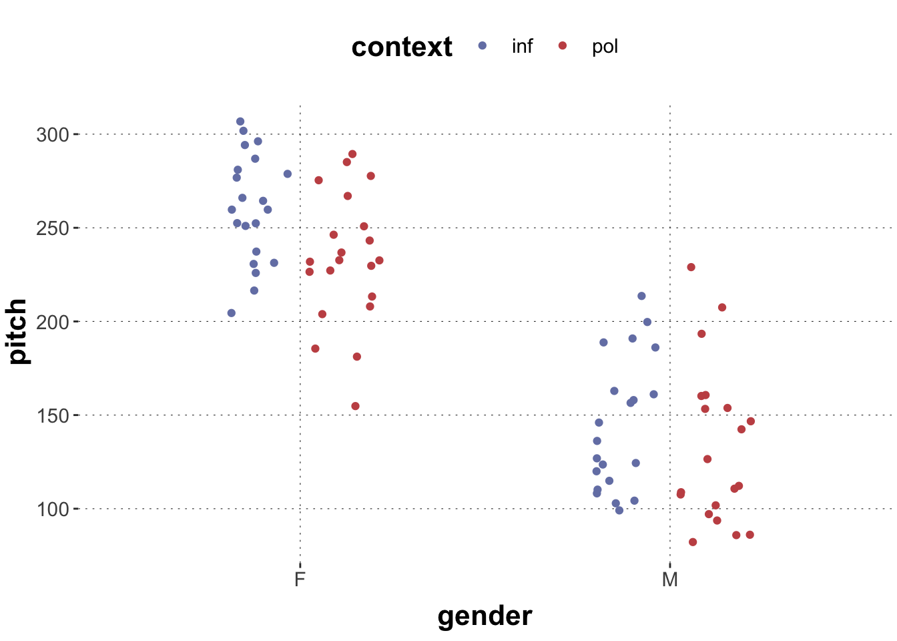

Here is code to load (and if necessary, install) required packages, and to set some global options (for plotting and efficient fitting of Bayesian models).
Reveal code
# install packages from CRAN (unless installed)pckgs_needed <-c("tidyverse","brms","remotes","tidybayes","bridgesampling","shinystan")pckgs_installed <-installed.packages()[,"Package"]pckgs_2_install <- pckgs_needed[!(pckgs_needed %in% pckgs_installed)]if(length(pckgs_2_install)) {install.packages(pckgs_2_install)} # install additional packages from GitHub (unless installed)if (!"aida"%in% pckgs_installed) { remotes::install_github("michael-franke/aida-package")}if (!"faintr"%in% pckgs_installed) { remotes::install_github("michael-franke/faintr")}if (!"cspplot"%in% pckgs_installed) { remotes::install_github("CogSciPrag/cspplot")}# load the required packagesx <-lapply(pckgs_needed, library, character.only =TRUE)library(aida)library(faintr)library(cspplot)# these options help Stan run fasteroptions(mc.cores = parallel::detectCores())# use the CSP-theme for plottingtheme_set(theme_csp())# global color scheme from CSPproject_colors = cspplot::list_colors()[c(1,3,4,5,2,6:14),"hex", drop =TRUE]# setting theme colors globallyscale_colour_discrete <-function(...) {scale_colour_manual(..., values = project_colors)}scale_fill_discrete <-function(...) {scale_fill_manual(..., values = project_colors)}
Generalized (non-)linear mixed effect models are a powerful statistical tool that gains increasing popularity for data analysis in cognitive science and many other disciplines. This tutorial will provide an overview of different categorical variable coding schemes used in mixed effect models. We will look at two example data sets from factorial-design experiments with categorical predictors and a continuous dependent variable which we will analyze using a Bayesian approach.
Introduction
Whereas models involving continuous predictors like height, weight or reaction time might be interpreted rather intuitively, models involving (very common!) categorical variables like gender or experimental conditions (did the participant read text1 or text2?) are often confusing. However, it is important to understand how to deal with such categorical variables mathematically because different decisions we make about the mathematical procedures influence the interpretation of the regression results.
This hands-on tutorial should provide an overview of different categorical variable coding schemes and walk you through applying and interpreting the output of a regression model fitted to variables coded in those different schemes. This tutorial presupposes a basic familiarity with R, linear regression and Bayesian data analysis with the brms R package (Buerkner, 2016). However, all the details of Bayesian analysis need not be understood. Avoiding too many mathematical details, the focus of this tutorial is rather conceptual - to convey in intuitive terms how categorical variables are translated to mathematical terms and how differences in this ‘translation’ influence the interpretation of a regression model. These conceptual ideas are also not bound to Bayesian analysis and are directly applicable in frequentist modeling tools (e.g. lmer package in R).
Most importantly, we should remember: any statistics of the data are just a tool for us to be able to draw conclusions about our research questions. The numbers that R (or any other application) computes don’t tell us anything - it’s our understanding of those tools and the interpretation of the numbers that provides answers to scientific questions!
First, we will shortly recap how linear regression models look like. Then, we will roughly familiarize ourselves with the data sets. Then, step by step we will look at different coding schemes: how they are applied in R and what a fitted regression model looks like.
Estimated reading time: 1.5h
Categorical Variables Coding Schemes
Why do we need to code categorical variables like gender or experimental conditions? ‘We don’t have to code continuous variables like reaction time!’, you might say. The reason is that categorical variables (also called factors) are usually represented in a data set as strings, e.g. the factor gender could contain the levels (i.e. distinct categories) female and male. But we cannot represent different strings in a regression model. So we need to numerically indicate that a predictor has different levels - by (implicitly) recoding the levels of a variable to numbers, e.g. a 1 for each occurrence of female and -1 for each occurrence of male in our data set. How we choose these numbers is the focus of this tutorial.
In common terms, by recoding the levels numerically we indicate the contrasts between the levels. Generally, we need N-1 numeric variables to represent the contrasts of a categorical variable with N levels.
To get a better understanding of what this means, we will dive right into an example.
Preparing the tools
We will use the following R packages in this tutorial. If you are missing some of them, you can install them by running e.g. install.packages('tidyverse'). NB: we will fit the models using brm - this might take some time to compile!
The first part of this tutorial is based on a data set from an experiment by Winter and Grawunder (2012) You can get the dataset by running:
Reveal code
politeness_df <- faintr::politeness# get a look at the data sethead(politeness_df)
# A tibble: 6 × 5
subject gender sentence context pitch
<chr> <chr> <chr> <chr> <dbl>
1 F1 F S1 pol 213.
2 F1 F S1 inf 204.
3 F1 F S2 pol 285.
4 F1 F S2 inf 260.
5 F1 F S3 pol 204.
6 F1 F S3 inf 287.
The data contains records of the voice pitch of speakers in different social contexts (polite and informal). They investigated whether the mean voice pitch differs across the factorgender of the speakers (F and M) and across the factorcontexts - resulting in four different condition combinations (gender X context). Such a design is called factorial design and the single combinations are called design cells.
Explore Data visually
Before we dive into any statistical analyses of our dataset it is helpful to get a rough idea of what the data looks like. For example, we can start by exploring the dataset visually.

Furthermore, we can compute some basic statistics - e.g. the mean of the different design cells, before we turn to more complex linear models. We can also compute the overall mean pitch across all the conditions - the grand mean. These values will be helpful for a sanity check when interpreting the linear models later on.
# A tibble: 4 × 3
# Groups: context [2]
context gender mean
<chr> <chr> <dbl>
1 inf F 261.
2 inf M 144.
3 pol F 233.
4 pol M 133.
Reveal code
mean(tibble_means$mean)
[1] 192.8605
Regression Models
While this tutorial presupposes some basic understanding of regression models, let us recap what exactly we compute when fitting a regression model. As usual for factorial designs, the regression model works under the assumption that observations in each cell are sampled from a normal distribution with a certain mean - and each design cell has an own mean. Research questions about data from factorial designs are usually about the estimated means of these design cells, e.g.: is this design cell’s mean different from zero, or from that design cell’s mean?
Let us stick to our example data. We want to estimate the mean pitch (\(y\)) depending on gender (\(x_1\)), context (\(x_2\)) and the interaction of the two factors (\(x_1x_2\)). So what we estimate is the regression function described by
\(\beta_0\) is the intercept and \(\beta_1, \beta_2\) and \(\beta_3\) are the slopes that are estimated when fitting the model; \(x_1\) and \(x_2\) represent the categorical variables and are exactly what is ‘coded’ when applying different variable coding schemes. For simplicity we will omit the error term \(\epsilon\) below. Will will come back to this regression function when interpreting the regression output given respective coding schemes.
Coding Categorical Variables
In our example, gender and context are categorical variables, so they need to be coded numerically. When categorical variables are coded for regression modeling, they are internally set to factors. Let’s do this manually here for explicitness.
Reveal code
politeness_df <- politeness_df %>%mutate(gender =factor(gender), # you could rename or reorder the levels herecontext =factor(context))# checkhead(politeness_df)
# A tibble: 6 × 5
subject gender sentence context pitch
<chr> <fct> <chr> <fct> <dbl>
1 F1 F S1 pol 213.
2 F1 F S1 inf 204.
3 F1 F S2 pol 285.
4 F1 F S2 inf 260.
5 F1 F S3 pol 204.
6 F1 F S3 inf 287.
Dummy (Treatment) Coding
Dummy coding, or treatment coding, is the default coding scheme used by R. Understanding the name ‘treatment coding’ helps understanding what this coding scheme does: imagine a medical experiment with a single control group (who obtain a placebo) and different experimental groups each of which gets a different treatment (e.g., different drugs), and where we want to compare each treatment group to the single, pivotal control group. Consequently, dummy coded variables are estimated by comparing all levels of the variable to a reference level. The intercept of a linear model containing dummy-coded variables is the mean of the reference level.
Our variables only have two levels, so the effect of gender could be estimated by treating female as the reference level and estimating the effect of being male compared to the reference level – so basically estimating the difference in pitch it takes to “get from female to male”. Similarly, we can estimate the effect of context: the informal context can be treated as the reference level and the effect of politeness can be estimated against it. By default, the first level of a factor is treated as the reference level (for unordered factors that is the first string in alphanumeric order) - but principally, there is no difference as to which level should be used as the reference level. It makes sense to choose the level which is in some sense the ‘control’ in your experimental design.
Because R uses dummy-coding by default, we can look at the default numerical coding right away. The function contrasts() displays the contrast matrix for the respective variable:
Reveal code
contrasts(politeness_df$gender)
M
F 0
M 1
Reveal code
contrasts(politeness_df$context)
pol
inf 0
pol 1
But if we wish to explicitly assign a dummy (treatment) coding to a variable, we may do so by a built-in R function:
Reveal code
contrasts(politeness_df$gender) <-contr.treatment(2) # insert the number of levels here# checkcontrasts(politeness_df$gender)
2
F 0
M 1
So both variables \(x_1\) and \(x_2\) can take either the value 0 or 1 (because we dummy-code both categorical variables; see below for more). We already defined the referenc levels of the single variables, now we can define the overall reference level of our model (by combining the two individual reference levels) – it is the mean pitch of female speakers in informal contexts.
Having set all the basics, we can now turn to computing a linear model of the mean pitch as predicted by the factors gender and context:
Reveal code
# here, we only use fixed effectslm.dummy.FE <-brm( pitch ~ gender * context,data = politeness_df,cores =4,iter =1000)lm.dummy.FE.coefs <-fixef(lm.dummy.FE)[,1] %>%as.numeric() # get the estimated coefficientssummary(lm.dummy.FE)
Family: gaussian
Links: mu = identity; sigma = identity
Formula: pitch ~ gender * context
Data: politeness_df (Number of observations: 83)
Draws: 4 chains, each with iter = 1000; warmup = 500; thin = 1;
total post-warmup draws = 2000
Population-Level Effects:
Estimate Est.Error l-95% CI u-95% CI Rhat Bulk_ESS Tail_ESS
Intercept 260.96 7.95 245.63 276.88 1.00 1077 1346
gender2 -116.44 11.38 -138.76 -94.49 1.00 941 1502
contextpol -27.77 11.33 -49.84 -5.88 1.00 1011 1217
gender2:contextpol 16.38 15.88 -14.91 47.14 1.01 809 1108
Family Specific Parameters:
Estimate Est.Error l-95% CI u-95% CI Rhat Bulk_ESS Tail_ESS
sigma 36.12 2.91 30.93 42.29 1.01 2098 1593
Draws were sampled using sampling(NUTS). For each parameter, Bulk_ESS
and Tail_ESS are effective sample size measures, and Rhat is the potential
scale reduction factor on split chains (at convergence, Rhat = 1).
Now how do we interpret the estimated coefficients?
Let us recall the regression equation that is hidden behind this output: \[y = \beta_0 + \beta_1*x_1 + \beta_2*x_2 + \beta_3*x_1x_2\]
In order to help us interpret the output, R assigns string names to the estimated coefficients using the names we used in the generic formula. The (Intercept) corresponds to \(\beta_0\), genderM corresponds to \(\beta_1\), contextpol corresponds to \(\beta_2\) and genderM:contextpol (the interaction term) to \(\beta_3\).
Further, let us recall the numerical coding of our variables: for \(x_1\) (gender) a 0 means female, a 1 means male; for \(x_2\) (context) a 0 means informal, a 1 means polite. So the computed values are the estimates for conditions differing from the respective reference conditions - i.e. when the respective \(x\) is a 1.
To get an estimate of a certain design cell (\(y_i\)) - let’s start with the mean pitch of female speakers (0 for \(x_1\)) in informal contexts (0 for \(x_2\)) - we just insert the corresponding numeric values for the corresponding \(x\) and the estimated value for the corresponding \(\beta\). Thus we get:
Hence, the mean pitch of female speakers in informal context corresponds to the intercept. As a sanity check, we can recall that for dummy coded variables the model intercept is just the mean of the reference cell (in our case, female speakers in informal contexts!).
Let’s now calculate the mean pitch of male speakers (1 for \(x_1\)) in informal contexts (0 for \(x_2\)):
Another common coding scheme is the simple coding (also called contrast coding). Simple coded variables are also compared to a reference level (just like dummy-coded ones). However, the intercept of a simple coded model is the grand mean – the mean of all cells (i.e. the mean of female-informal & female-polite & male-informal & male-polite cells).
Generally, this kind of coding can be created by subtracting \(1/k\) from the dummy coding contrast matrix, where \(k\) is the number of levels a variable has (in our case, both have two). Hence, the reference level will always only have negative values in the contrast matrix. The general rule is that the contrasts within a column have to add up to 0. R does not provide a built-in function for simple coding, but we can easily create the respective matrix ourselves by subtracting \(1/k\) (i.e. 1/2) from the dummy coding matrix:
Reveal code
# manual creation of contrastscontr.matrix <-matrix( rep(0.5, 2))dummy.matrix <-contr.treatment(2)contr.coding <- dummy.matrix - contr.matrix# we should duplicate the values to not overwrite previous contrastspoliteness_df <- politeness_df %>%mutate(context_contr = context,gender_contr = gender)contrasts(politeness_df$context_contr) <- contr.codingcontrasts(politeness_df$gender_contr) <- contr.coding
Hence now the gender is coded as -0.5 for female and 0.5 for male; context is coded as -0.5 for informal and 0.5 for polite.
Let’s again look at our regression model:
Reveal code
lm.contr.FE <-brm( pitch ~ gender_contr * context_contr,data = politeness_df,cores =4,iter =1000)lm.contr.FE.coefs <-fixef(lm.contr.FE)[,1] %>%as.numeric() # get vector of estimated coefficientssummary(lm.contr.FE)
Family: gaussian
Links: mu = identity; sigma = identity
Formula: pitch ~ gender_contr * context_contr
Data: politeness_df (Number of observations: 83)
Draws: 4 chains, each with iter = 1000; warmup = 500; thin = 1;
total post-warmup draws = 2000
Population-Level Effects:
Estimate Est.Error l-95% CI u-95% CI Rhat Bulk_ESS
Intercept 192.87 3.98 185.01 200.72 1.00 3023
gender_contr2 -108.16 7.88 -123.42 -92.57 1.01 2740
context_contr2 -19.36 7.94 -34.33 -3.73 1.00 2468
gender_contr2:context_contr2 15.84 15.48 -14.97 47.13 1.00 2953
Tail_ESS
Intercept 1464
gender_contr2 1199
context_contr2 1405
gender_contr2:context_contr2 1438
Family Specific Parameters:
Estimate Est.Error l-95% CI u-95% CI Rhat Bulk_ESS Tail_ESS
sigma 36.07 2.85 30.92 42.18 1.00 2599 1642
Draws were sampled using sampling(NUTS). For each parameter, Bulk_ESS
and Tail_ESS are effective sample size measures, and Rhat is the potential
scale reduction factor on split chains (at convergence, Rhat = 1).
In order to compute the mean pitch of a specific cell, we proceed just as with dummy-coded variables and insert the respective estimates and values for \(x\). Let us start with female speakers (\(x_1\) is -0.5) in informal contexts (\(x_2\) is -0.5):
We get the same result as before (as we should - the estimates should not depend on a coding scheme but only on the data). As a sanity check, we can again look at the intercept – it matches the grand mean we computed in the beginning of this tutorial – as it should.
Your turn! Compute the pitch means for the other three conditions.
Reveal code
# your code here
Deviation (Sum) Coding
Deviation coding (also called sum coding) is the most popular coding scheme and is often considered the best choice to get a clear picture of presence (or absence) of an effect and a clear random effects interpretation.
It is slightly different from the previous schemes. It compares the mean of the predicted variable for a specific condition to the grand mean. So the estimates do not tell you the difference between the reference level and another level anymore. The intercept of linear models with sum coded variables is the grand mean.
R has a built-in function for creating sum coded variables:
Reveal code
# again create a new variablepoliteness_df %>%mutate(context_dev = context,gender_dev = gender) -> politeness_dfcontrasts(politeness_df$context_dev) <-contr.sum(2) # insert number of levelscontrasts(politeness_df$gender_dev) <-contr.sum(2)
Now the gender is coded as s 1 for female and -1 for male; context is coded as 1 for informal and -1 for polite.
Below we fit a model with the sum-coded variables:
Since the intercept is now the grand mean and not a specific reference level, let us think about the interpretation of the single estimates. The estimate of e.g. the context effect now denotes the value by which the mean pitch in informal (estimate * 1, remember our coding!) or polite contexts (estimate * -1) differs from the grand mean. So if we wish to calculate the mean pitch in polite contexts (across genders), we would do:
This means that the single estimates are in some sense ‘independent’ of each other (in contrast to e.g. dummy-coded variables where the estimates are bound to the reference levels of two variables) and give us insight if a specific factor is credibly different from 0. Similarly, if we wish to calculate the mean pitch of male speakers, we would calculate:
Reveal code
yM = lm.dev.FE.coefs[1] + lm.dev.FE.coefs[3] * (-1)yM
[1] 138.9629
Helmert Coding
In this coding scheme, a level of a variable is compared to its subsequent levels. In our dataset, e.g. for gender the level female is compared to the subsequent level male.
Generally, to create such a coding, in order to compare the first level to the subsequent levels you would assign \((k-1)/k\) to the first level and \(-1/k\) to all subsequent levels where \(k\) is the total number of levels. To compare the second level to the subsequent levels you would assign 0 to the first level, \((i-1)/i\) to the second level and \(-i/1\) to all subsequent levels where \(i = k-1\) and so on. The difference of this coding scheme to previous ones is more clear for variales with >2 levels (see below). The intercept of a linear model corresponds to the grand mean.
R does not have a built-in function for standard Helmert coding, so we do it manually:
Family: gaussian
Links: mu = identity; sigma = identity
Formula: pitch ~ context_helm * gender_helm
Data: politeness_df (Number of observations: 83)
Draws: 4 chains, each with iter = 1000; warmup = 500; thin = 1;
total post-warmup draws = 2000
Population-Level Effects:
Estimate Est.Error l-95% CI u-95% CI Rhat Bulk_ESS
Intercept 192.93 4.06 185.01 201.08 1.00 2085
context_helm1 19.22 8.05 3.06 35.15 1.00 2048
gender_helm1 108.21 7.75 92.33 123.53 1.00 2094
context_helm1:gender_helm1 15.41 16.09 -16.81 47.08 1.00 2194
Tail_ESS
Intercept 1516
context_helm1 1413
gender_helm1 1333
context_helm1:gender_helm1 1454
Family Specific Parameters:
Estimate Est.Error l-95% CI u-95% CI Rhat Bulk_ESS Tail_ESS
sigma 36.28 3.03 31.02 42.85 1.00 2081 1616
Draws were sampled using sampling(NUTS). For each parameter, Bulk_ESS
and Tail_ESS are effective sample size measures, and Rhat is the potential
scale reduction factor on split chains (at convergence, Rhat = 1).
The contrast estimate for the first level and the remaining levels is calculated by taking the mean of the dependent variable for the first level and subtracting the mean of the dependent variable for the remaining levels (in our case, just the mean of the second level). In other words, if we look at the context coefficient it denotes the difference between the mean of the polite and informal context means.
Mixing Coding Schemes
If you have several categorical predictor variables, it is also possible (and often useful!) to use different coding schemes for the different variables. It might, for example, make sense to use dummy coding for a variable which has a control and a treatment condition, and to use e.g. simple coding for a variable which has two ‘equal’ levels.
For example, we could use dummy-coding for context and simple-coding for gender.
When you mix coding schemes or define your own schemes there might be no pre-defined answers to questions as to what the sigle coefficients or the intercept mean. But knowing how the different schemes work, you can easily find this out!
Let us explore how the interpretation of the model changes if we mix coding schemes:
Family: gaussian
Links: mu = identity; sigma = identity
Formula: pitch ~ context * gender_contr
Data: politeness_df (Number of observations: 83)
Draws: 4 chains, each with iter = 1000; warmup = 500; thin = 1;
total post-warmup draws = 2000
Population-Level Effects:
Estimate Est.Error l-95% CI u-95% CI Rhat Bulk_ESS
Intercept 202.86 5.63 192.34 213.92 1.00 2434
contextpol -19.77 8.24 -35.64 -3.57 1.00 2242
gender_contr2 -115.75 10.86 -137.77 -94.63 1.00 1442
contextpol:gender_contr2 15.45 15.83 -14.92 46.28 1.00 1688
Tail_ESS
Intercept 1622
contextpol 1582
gender_contr2 1190
contextpol:gender_contr2 1423
Family Specific Parameters:
Estimate Est.Error l-95% CI u-95% CI Rhat Bulk_ESS Tail_ESS
sigma 36.14 3.02 30.94 42.60 1.00 2163 1580
Draws were sampled using sampling(NUTS). For each parameter, Bulk_ESS
and Tail_ESS are effective sample size measures, and Rhat is the potential
scale reduction factor on split chains (at convergence, Rhat = 1).
Generally, the interpretation is just the combination of what we have learned about the individual coding schemes. Recall that the intercept of a dummy-coded model is the mean of the reference level – since we dummy-coded context, the refernce level would be informal context. But it is not the intercept yet! We have the second predictor in our model – the simple coded gender. In simple coded models the intercept is the mean across the levels of the variable. Now the intercept of our model with the two different predictors is the mean pitch in informal contexts - across genders.
Following this logic, the context estimate denotes the difference between the informal and polite contexts - still across genders. The gender estimate denoted the difference between the mean pitch and female speakers if multiplied by the value -0.5 (recall our coding above); and the mean pitch and male speakers if multiplied by the value 0.5.
Variables with three levels
In order to see the differences yielded by the different coding schemes more clearly, it is usefut to look at an example datas et containing predictors with three levels. But don’t worry, all the concepts we have learned so far work just the same way - independently of the number of levels a predictor has.
The data set latinsquare is provided in the package languageR which you need to install in order to access it.
Reveal code
# alternative dataset with a three-level variablerequire(languageR)latinsquare_df <-as_tibble(latinsquare)head(latinsquare_df)
# A tibble: 6 × 6
Group Subject Word RT SOA List
<fct> <fct> <fct> <int> <fct> <fct>
1 G1 S1 W1 532 short L1
2 G1 S2 W1 542 short L1
3 G1 S3 W1 615 short L1
4 G1 S4 W1 547 short L1
5 G2 S5 W9 553 short L3
6 G2 S6 W9 464 short L3
In this example data set, the reaction time (RT) of subjects in a lexical decision experiment was simulated. The predictors are, among others, the stimulus-onset asynchrony (SOA) (with the levels long, medium, short) and different lists of prime-target pairs of words (L1, L2, L3) that are presented to the participants. Without going into the details of the experimental paradign, let’s imagine we would like to predict the participants’ mean reaction time given the list type, the SOA type and their interaction.
Again, it is helpful to start by trying to get a rough idea of what the data looks like.
# A tibble: 9 × 3
# Groups: List [3]
List SOA mean
<fct> <fct> <dbl>
1 L1 long 530.
2 L1 medium 537.
3 L1 short 544.
4 L2 long 543.
5 L2 medium 556.
6 L2 short 534.
7 L3 long 529.
8 L3 medium 515.
9 L3 short 522.
Reveal code
mean(tibble_baseStats$mean)
[1] 534.5139
Now we can turn to modelling!
Dummy (Treatment) Coding
Generally, the coding schemes work in the very same way independently of the number of levels. The only difference to our old data set is that now we need two numeric variables coding the contrasts between the levels of one variable. If we look at the default (dummy) coding of e.g. the variable List we see a contrast matrix with two columns, each denoting the comparisons between two levels:
Reveal code
contrasts(latinsquare$SOA)
medium short
long 0 0
medium 1 0
short 0 1
Reveal code
contrasts(latinsquare_df$List)
L2 L3
L1 0 0
L2 1 0
L3 0 1
So now the recoding of the categorical variable takes two numeric variables: e.g. \(x_{1_2}\) and \(x_{1_3}\), where both can take the values 0 or 1; the single levels are denoted by the combination of the two numeric variables. Again there is a reference level - List 1 - described by \(x_{1_2}\) and \(x_{1_3}\) being 0. \(x_{1_2}\) being 1 describes the difference between the reference level and List 2; \(x_{1_3}\) being 1 describes the difference between the reference level and List 3. Correspondingly, there is and individual \(\beta\) for each numeric variable estimated in the regression model. The coding of the SOA factor works just the same way. The interactions between specific levels are described by combining the respective numeric variables \(x\). So the model we are fitting is described by:
Family: gaussian
Links: mu = identity; sigma = identity
Formula: RT ~ List * SOA
Data: latinsquare_df (Number of observations: 144)
Draws: 4 chains, each with iter = 1000; warmup = 500; thin = 1;
total post-warmup draws = 2000
Population-Level Effects:
Estimate Est.Error l-95% CI u-95% CI Rhat Bulk_ESS Tail_ESS
Intercept 530.54 11.48 508.11 552.33 1.00 1006 1343
ListL2 12.31 16.31 -19.95 45.20 1.00 1036 1161
ListL3 -1.18 15.83 -31.23 30.00 1.00 975 1141
SOAmedium 6.45 15.84 -24.71 37.80 1.00 1017 1383
SOAshort 13.46 15.77 -17.46 44.50 1.01 1137 1323
ListL2:SOAmedium 7.02 22.86 -36.66 52.38 1.00 1109 1264
ListL3:SOAmedium -20.72 22.52 -64.19 23.98 1.00 1027 1089
ListL2:SOAshort -21.98 23.08 -69.09 20.36 1.00 1218 1361
ListL3:SOAshort -20.67 22.18 -64.06 22.78 1.00 1198 1117
Family Specific Parameters:
Estimate Est.Error l-95% CI u-95% CI Rhat Bulk_ESS Tail_ESS
sigma 46.57 2.85 41.41 52.59 1.00 2067 1465
Draws were sampled using sampling(NUTS). For each parameter, Bulk_ESS
and Tail_ESS are effective sample size measures, and Rhat is the potential
scale reduction factor on split chains (at convergence, Rhat = 1).
Since both predictors are dummy-coded the intercept represents the reference level - the mean RT for List 1 and a long SOA. Following the same procedure as for the two-level variables you could calculate the estimated mean RTs for specific conditions.
Simple (Contrast) Coding
Simple coding only slightly differs from dummy-coding – the intercept of the model is the grand mean, not the mean RT of the reference level. Otherwise, the coefficients still denote the difference between the reference level and other specific levels.
Family: gaussian
Links: mu = identity; sigma = identity
Formula: RT ~ List_contr * SOA_contr
Data: latinsquare_df (Number of observations: 144)
Draws: 4 chains, each with iter = 1000; warmup = 500; thin = 1;
total post-warmup draws = 2000
Population-Level Effects:
Estimate Est.Error l-95% CI u-95% CI Rhat Bulk_ESS
Intercept 534.65 3.86 527.10 542.28 1.00 2318
List_contr2 7.71 9.82 -11.91 26.51 1.00 1832
List_contr3 -14.77 9.67 -33.59 3.92 1.00 1636
SOA_contr2 1.92 9.51 -16.71 20.01 1.00 2282
SOA_contr3 -0.51 9.62 -19.41 18.01 1.00 2362
List_contr2:SOA_contr2 4.56 23.51 -41.17 49.62 1.00 1547
List_contr3:SOA_contr2 -22.79 23.39 -68.03 22.43 1.00 1413
List_contr2:SOA_contr3 -24.04 23.99 -69.89 23.34 1.00 1550
List_contr3:SOA_contr3 -22.53 23.87 -68.93 26.21 1.00 1529
Tail_ESS
Intercept 1447
List_contr2 1661
List_contr3 1626
SOA_contr2 1811
SOA_contr3 1872
List_contr2:SOA_contr2 1750
List_contr3:SOA_contr2 1421
List_contr2:SOA_contr3 1395
List_contr3:SOA_contr3 1671
Family Specific Parameters:
Estimate Est.Error l-95% CI u-95% CI Rhat Bulk_ESS Tail_ESS
sigma 46.63 2.91 41.09 52.66 1.00 1819 1386
Draws were sampled using sampling(NUTS). For each parameter, Bulk_ESS
and Tail_ESS are effective sample size measures, and Rhat is the potential
scale reduction factor on split chains (at convergence, Rhat = 1).
Deviation (Sum) Coding
With increasing number of levels within the factors the complexity and messiness of interpreting the differences between levels against each other increases considerably. Hence it might make a lot of sense to use the deviation coding scheme which provides estimates of effects comapred to the grand mean. We again can use the R built-in function to assign deviation coding to our three-level factors:
Reveal code
latinsquare_df %>%mutate(List_dev = List,SOA_dev = SOA) -> latinsquare_dfcontrasts(latinsquare_df$List_dev) <-contr.sum(3) # insert number of levelscontrasts(latinsquare_df$SOA_dev) <-contr.sum(3)
For e.g. SOA our numeric variables now denote the effect of long SOA compared to the grand mean when \(x_{2_2}\) is a 1 and \(x_{2_3}\) is a 0; they denote the effect of medium SOA compared to the grand mean when \(x_{2_2}\) is a 0 and \(x_{2_3}\) is a 1; the effect of short SOA is never compared to the grand mean since it is always assigned a -1.
Family: gaussian
Links: mu = identity; sigma = identity
Formula: RT ~ List_helm * SOA_helm
Data: latinsquare_df (Number of observations: 144)
Draws: 4 chains, each with iter = 1000; warmup = 500; thin = 1;
total post-warmup draws = 2000
Population-Level Effects:
Estimate Est.Error l-95% CI u-95% CI Rhat Bulk_ESS
Intercept 534.62 4.02 527.08 542.37 1.00 4337
List_helm1 3.38 8.71 -14.06 21.29 1.00 4153
List_helm2 22.49 9.43 3.90 41.67 1.00 4177
SOA_helm1 -0.93 8.08 -16.40 15.48 1.00 4516
SOA_helm2 2.98 9.08 -15.17 20.05 1.00 4569
List_helm1:SOA_helm1 -14.94 17.32 -48.48 19.96 1.00 4332
List_helm2:SOA_helm1 -13.04 20.49 -53.46 27.64 1.00 4377
List_helm1:SOA_helm2 -14.19 20.36 -53.70 25.11 1.00 5201
List_helm2:SOA_helm2 28.50 23.11 -16.79 71.97 1.00 3660
Tail_ESS
Intercept 1493
List_helm1 1257
List_helm2 1621
SOA_helm1 1565
SOA_helm2 1467
List_helm1:SOA_helm1 1375
List_helm2:SOA_helm1 1589
List_helm1:SOA_helm2 1508
List_helm2:SOA_helm2 1453
Family Specific Parameters:
Estimate Est.Error l-95% CI u-95% CI Rhat Bulk_ESS Tail_ESS
sigma 46.57 2.75 41.54 52.49 1.00 3405 1546
Draws were sampled using sampling(NUTS). For each parameter, Bulk_ESS
and Tail_ESS are effective sample size measures, and Rhat is the potential
scale reduction factor on split chains (at convergence, Rhat = 1).
The main effect estimates denote the differences between the mean of List1 and the mean of (List2 + List3); and between the mean of List2 and the mean of List3. Respectively, they denote the differences between the mean of SOA long and the mean of (medium + short); and between the mean of SOA medium and the mean of short. The intercept is the grand mean.
Reverse Helmert Coding
The reverse Helmert coding scheme (also called difference coding) is quite similar to the Helmert coding, but compares the mean of a level to its previous levels. Since we basically reverse the coding we used in the previous scheme, we also ‘reverse’ the contrast matrix to create such a coding.
Family: gaussian
Links: mu = identity; sigma = identity
Formula: RT ~ List_rhelm * SOA_rhelm
Data: latinsquare_df (Number of observations: 144)
Draws: 4 chains, each with iter = 1000; warmup = 500; thin = 1;
total post-warmup draws = 2000
Population-Level Effects:
Estimate Est.Error l-95% CI u-95% CI Rhat Bulk_ESS
Intercept 534.55 3.76 527.17 541.83 1.00 4673
List_rhelm1 7.79 9.67 -10.73 27.07 1.00 4045
List_rhelm2 -18.53 8.03 -34.91 -2.09 1.00 3392
SOA_rhelm1 2.14 9.09 -15.65 19.54 1.00 4343
SOA_rhelm2 -1.47 8.30 -16.98 14.77 1.00 4341
List_rhelm1:SOA_rhelm1 6.12 22.93 -39.70 50.41 1.00 4243
List_rhelm2:SOA_rhelm1 -24.63 20.38 -64.38 13.86 1.00 4589
List_rhelm1:SOA_rhelm2 -25.76 19.54 -62.98 14.41 1.00 3873
List_rhelm2:SOA_rhelm2 2.13 16.72 -30.49 36.18 1.00 5767
Tail_ESS
Intercept 1516
List_rhelm1 1336
List_rhelm2 1229
SOA_rhelm1 1353
SOA_rhelm2 1383
List_rhelm1:SOA_rhelm1 1644
List_rhelm2:SOA_rhelm1 1509
List_rhelm1:SOA_rhelm2 1141
List_rhelm2:SOA_rhelm2 1426
Family Specific Parameters:
Estimate Est.Error l-95% CI u-95% CI Rhat Bulk_ESS Tail_ESS
sigma 46.42 2.82 41.24 52.44 1.00 3219 1627
Draws were sampled using sampling(NUTS). For each parameter, Bulk_ESS
and Tail_ESS are effective sample size measures, and Rhat is the potential
scale reduction factor on split chains (at convergence, Rhat = 1).
In our example, the first estimate denotes the difference between the mean of List2 and the mean of List1; the second - the difference between the mean of List3 and the mean of (List1 + List2). The main effects of SOA can be interpreted similarly.
Mixed Schemes: Dummy and Deviation Coding
Just like with two-level factors, we might wish to use different coding schemes for different predictors. It might make sense to use dummy coding for a variable which has a control and two different treatment conditions, and to use deviation coding for a variable which has ‘equal’ levels.
For example, we could use dummy-coding for List and deviation-coding for SOA.
Family: gaussian
Links: mu = identity; sigma = identity
Formula: RT ~ List * SOA_dev
Data: latinsquare_df (Number of observations: 144)
Draws: 4 chains, each with iter = 1000; warmup = 500; thin = 1;
total post-warmup draws = 2000
Population-Level Effects:
Estimate Est.Error l-95% CI u-95% CI Rhat Bulk_ESS Tail_ESS
Intercept 536.86 6.43 524.71 550.08 1.00 1899 1367
ListL2 7.64 9.18 -10.80 25.65 1.00 2113 1456
ListL3 -14.67 9.54 -33.18 4.45 1.00 2127 1621
SOA_dev1 -7.17 9.44 -25.35 11.35 1.01 1199 1390
SOA_dev2 -0.11 9.31 -17.94 18.74 1.01 1126 1365
ListL2:SOA_dev1 5.53 13.45 -21.04 32.30 1.00 1284 1336
ListL3:SOA_dev1 14.37 13.65 -13.08 39.29 1.00 1401 1361
ListL2:SOA_dev2 11.89 13.03 -12.84 37.04 1.00 1183 1341
ListL3:SOA_dev2 -6.65 13.24 -33.02 18.72 1.00 1266 1474
Family Specific Parameters:
Estimate Est.Error l-95% CI u-95% CI Rhat Bulk_ESS Tail_ESS
sigma 46.50 2.85 41.37 52.43 1.00 2126 1370
Draws were sampled using sampling(NUTS). For each parameter, Bulk_ESS
and Tail_ESS are effective sample size measures, and Rhat is the potential
scale reduction factor on split chains (at convergence, Rhat = 1).
Towards the end of this tutorial, the main take-away is this: when you look at the estimates of (any) model, you could ask yourself a couple of questions like these to make sure you understand what was calculated:
What does the intercept represent?
What do the single estimates mean?
What do they tell me about my hypotheses?
Of course, you will also encounter experimental designs which use a two-level and a three-level categorical predictors – but the conceptual basics regarding how to choose the contrasts and how to interpret linear models are the same.
Conclusion
This tutorial provides an outline of most common coding schemes, but there are also others out there. However, having a basic understanding of the procedures described above, you are perfectly prepared to deal with a broad spectrum of experimental data in psychology and other disciplines. There are heuristics as to which coding schemes to choose; but most importantly, you should choose statistical tools that are the best fit for your specific research question. It is often helpful to write up the results of a pilot model to see if the interpretation of the results makes clear statements about your hypothesis.
References
P. Buerckner, 2016. “brms: An R package for Bayesian multilevel models using Stan”. In Journal of Statistical Software 80.1, pp. 1–28.
J. G. W. Raaijmakers et al., 1999. How to Deal with “The Language-as-Fixed-Effect Fallacy: Common Misconceptions and Alternative Solutions. In Journal of Memory and Language
B. Winter, S. Grauwunder, 2012. “The Phonetic Profile of Korean Formality”. In Journal of Phonetics 40, pp. 808–815.